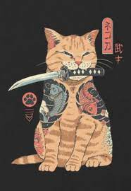

Nekogahara
In medieval Japan, a bell hanging on the collar is a sign that a cat has a master. Norachiyo's bell hangs from his katana sheath, but he is nonetheless a stray—a ronin. This one-eyed cat samurai travels across a dishonest world, cutting through pretense and deception with his blade.
